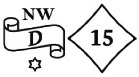
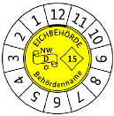
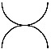
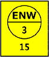
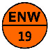
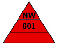
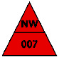

- 0.
Vorgaben für alle Kennzeichen
- 0.1
Die Farbe der in den nachfolgend aufgeführten Kennzeichen verwendeten Schriften und Zeichen ist schwarz. Die Kennzeichen können auch als Relief ohne zusätzliche Farbe in eine Plombe eingedrückt werden.
- 0.2
Sind Kennzeichen als Klebemarke ausgeführt, dürfen diese nicht zerstörungsfrei abgelöst werden können.
- 1.
Kennzeichen der Eichbehörden (§ 38)
- 1.1
Das Eichkennzeichen besteht im linken Teil aus einem gewundenen Band mit dem Buchstaben „D“. Oberhalb des Bandes ist die Kennung der jeweiligen Eichaufsichtsbehörde und unterhalb des Bandes ist ein sechsstrahliger Stern angebracht. Anstelle des Sterns kann auch die Kennung des prüfenden Eichamtes verwendet werden. Rechts neben dem Band steht in einem auf der Spitze stehenden Quadrat mit nach innen gewölbten Kanten die Jahresangabe, bestehend aus den beiden letzten Ziffern des Jahres, in dem die Eichfrist beginnt. Die Mindesthöhe des Eichkennzeichens beträgt 5 mm; in der Ausführung als Schlagstempel beträgt sie 2 mm.
Beispiel:

Wird das Eichkennzeichen als Marke verwendet, kann dieses in einer rechteckigen oder runden Form erfolgen. Die Marke kann den Namen der Eichbehörde enthalten. Die Hintergrundfarbe der Marke ist gelb, entsprechend der nachfolgenden Darstellung.
- 1.2
Beträgt die Eichfrist weniger als zwölf Monate, besteht die Kennzeichnung aus einer runden Klebemarke mit den Monatszahlen 1 bis 12 am Rand sowie dem Eichkennzeichen in der Mitte. Der Kalendermonat der Eichung ist auf der Klebemarke kenntlich zu machen. Die Kennzeichnung kann auch durch Kombination der runden Marke nach Nummer 1.1 mit einem Ringaufkleber erfolgen, der die Monatszahlen 1 bis 12 trägt.
Beispiel:

- 1.3
Das Zusatzzeichen zur Bezeichnung des Endes der Eichfrist hat eine der folgenden Formen.
- 1.4
Das Sicherungszeichen besteht aus dem ersten Teil des Eichkennzeichens nach Nummer 1.1; die Hintergrundfarbe ist orange, entsprechend der nachfolgenden Darstellung.
- 1.5
Das Entwertungszeichen besteht aus zwei sich tangierenden Halbkreisen in nachstehender Ausführung.
Beispiel:

- 2.
Kennzeichen der staatlich anerkannten Prüfstellen (§ 50 Absatz 2 und 3)
- 2.1
Das Eichkennzeichen der Prüfstellen trägt in der oberen Hälfte eines Kreises den Buchstaben E bei Messgeräten für Elektrizität, G bei Messgeräten für Gas, K bei Messgeräten für Wärme und W bei Messgeräten für Wasser, gefolgt von der Kennung der zuständigen Behörde. Darunter befindet sich die der Prüfstelle von der zuständigen Behörde zugeteilte Ordnungsnummer. Unterhalb des Kreises oder daneben steht die Jahresangabe, bestehend aus den letzten beiden Ziffern des Jahres, in dem die Eichfrist beginnt. Das Kennzeichen kann als Plombe ausgeführt werden. Auf Plomben darf die Jahresangabe auf der Rückseite angebracht werden. Bei der Ausführung als Klebemarke ist die Hintergrundfarbe des Eichkennzeichens gelb, entsprechend der nachfolgenden Darstellung.
Beispiel:

Erläuterung: Kennzeichen einer Prüfstelle für Elektrizitätsmessgeräte (E), zuständige Behörde Nordrhein-Westfalen (NW), zugeteilte Ordnungsnummer „3“, Jahr der Eichung 2015.
- 2.2
Das Sicherungszeichen der staatlich anerkannten Prüfstelle entspricht dem oberen Teil des Eichkennzeichens nach Nummer 2.1. Es kann als Plombe ausgeführt werden. Bei Ausführung als Klebemarke ist die Hintergrundfarbe orange, entsprechend der nachfolgenden Darstellung.
Beispiel:

- 3.
Kennzeichen des Instandsetzers (§ 54 Absatz 3 Satz 2, § 55 Absatz 2 Satz 2)
- 3.1
Das Instandsetzerkennzeichen besteht aus einer dreieckigen Klebemarke mit einer Seitenlänge von 30 mm.
Das Kennzeichen enthält im oberen Feld die Kennung der zuständigen Behörde, im mittleren Feld eine dem Instandsetzer von der zuständigen Behörde zugeteilte Nummer. Das untere Feld ist für die Angabe des Datums der Instandsetzung sowie des Namenskürzels des Mitarbeiters bestimmt, der die Instandsetzung vorgenommen hat. Die Hintergrundfarbe des Kennzeichens ist rot, entsprechend der nachfolgenden Darstellung.
Beispiel:

- 3.2
Das Sicherungszeichen des Instandsetzers besteht aus einer dreieckigen Klebemarke mit einer Seitenlänge von mindestens 7 mm. Die Rückseite des Sicherungszeichens in der Ausführung als Plombe darf mit einem Firmenzeichen versehen sein.
Das Kennzeichen trägt im oberen Feld die Kennung der zuständigen Behörde, darunter die dem Instandsetzer von der zuständigen Behörde zugeteilte Nummer. Die Hintergrundfarbe des Kennzeichens ist rot, entsprechend der nachfolgenden Darstellung.
Beispiel:

- 4.
Kennungen der in den Ländern zuständigen Behörden:
Tabelle 1
| Land | Kennung |
|---|
| Baden-Württemberg | BW |
| Bayern | BY |
| Berlin/Brandenburg | BB |
| Bremen | HB |
| Hamburg/Schleswig-Holstein/Mecklenburg-Vorpommern | NO |
| Hessen | HE |
| Niedersachsen | NI |
| Nordrhein-Westfalen | NW |
| Rheinland-Pfalz | RP |
| Saarland | SL |
| Sachsen | SN |
| Sachsen-Anhalt | ST |
| Thüringen | TH |